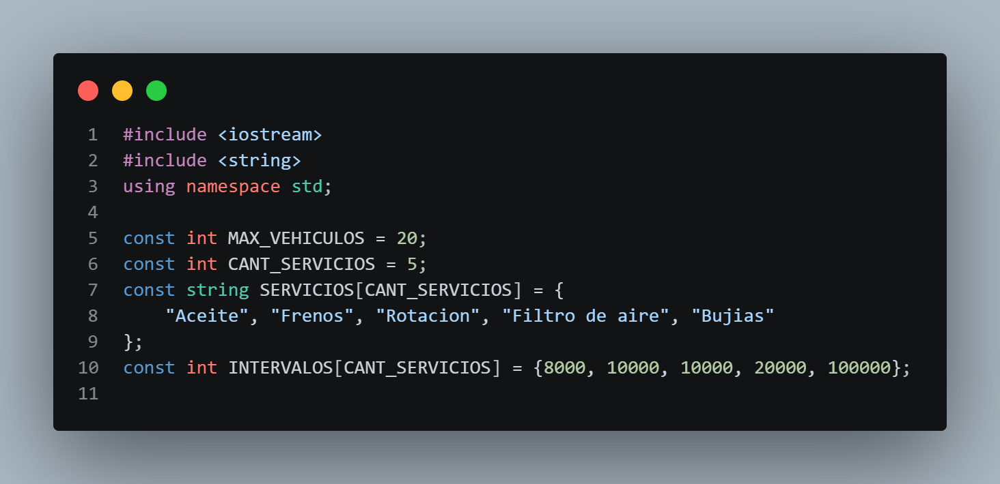
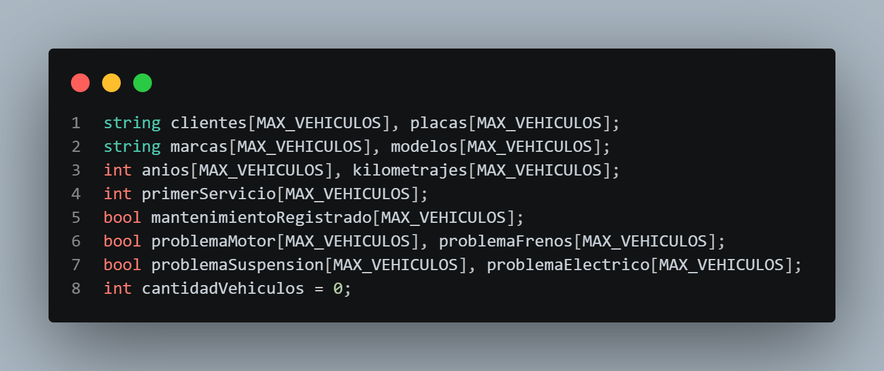
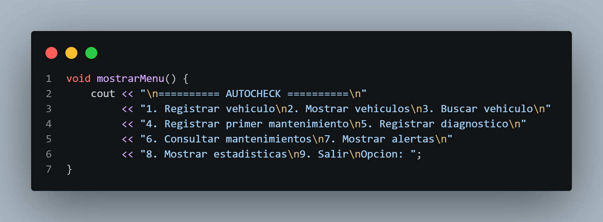
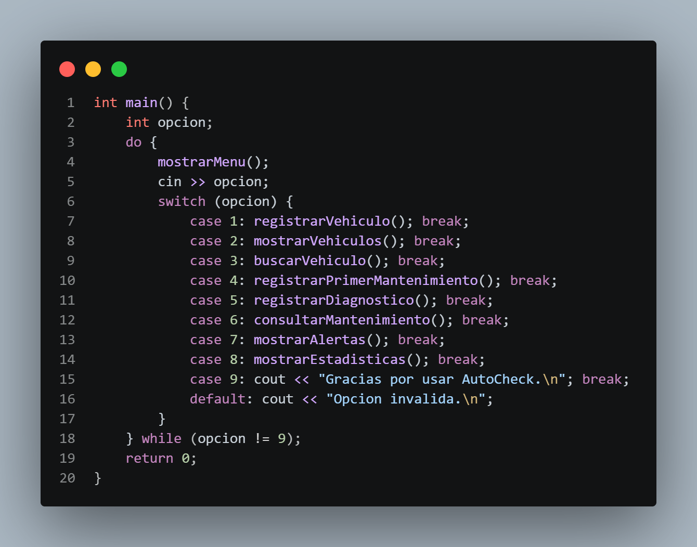
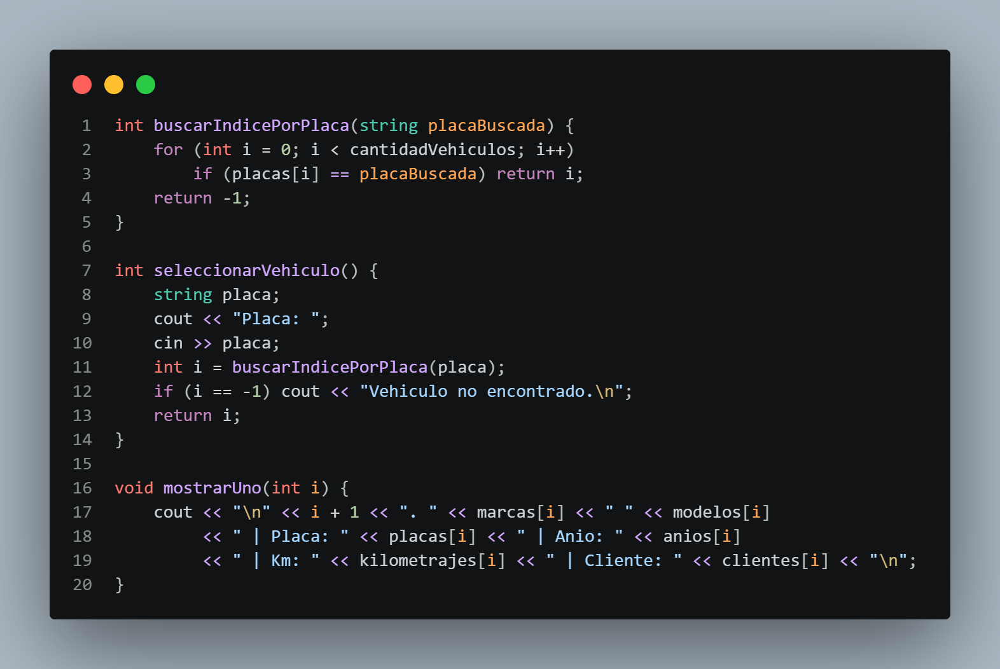
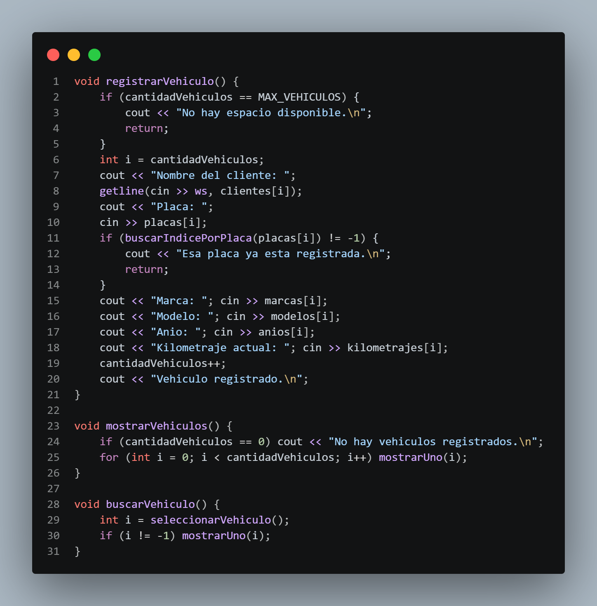
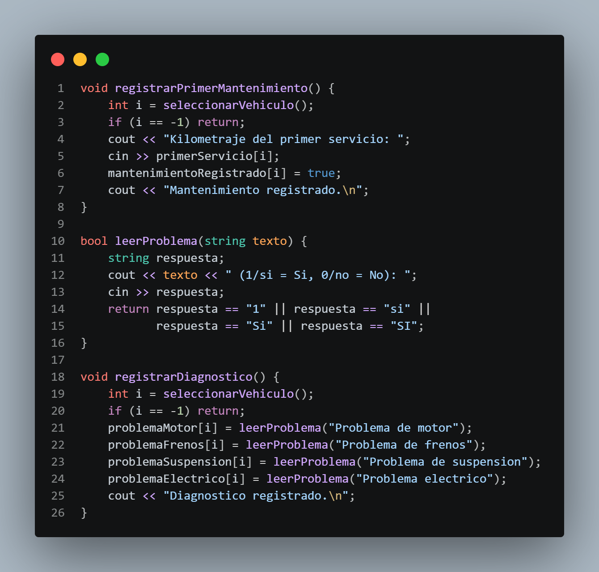
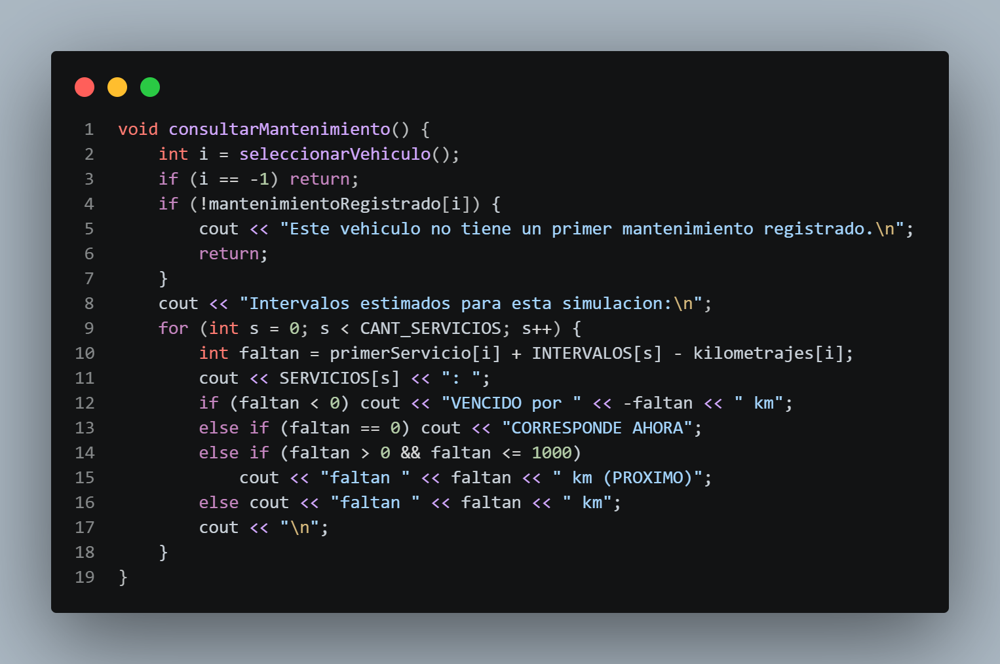
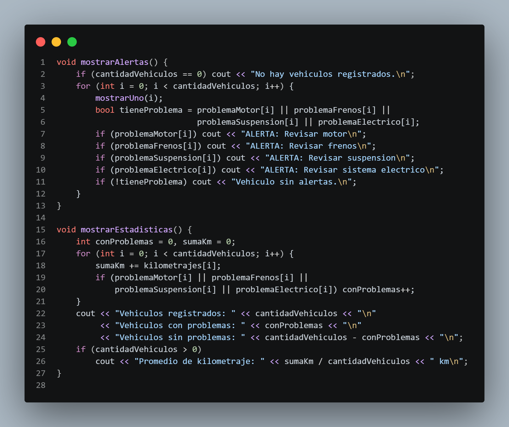

Eric · Parte 1
Líneas 1–10
Preparación del programa

01Libreríasiostream controla la entrada y salida; string permite almacenar texto.
02ConfiguraciónSERVICIOS[s] e INTERVALOS[s] comparten la misma posición.
Proyecto final · Programación I
Sistema de Diagnóstico y Mantenimiento Vehicular en C++
AutoCheck simula el flujo básico de un taller: registra vehículos, identifica fallas y calcula servicios preventivos desde una interfaz de consola.
Recorrido
Arquitectura del programa
El menú conecta la entrada del usuario con funciones específicas; todas trabajan sobre la misma información almacenada en arreglos.
Bloque 01

01Libreríasiostream controla la entrada y salida; string permite almacenar texto.
02ConfiguraciónSERVICIOS[s] e INTERVALOS[s] comparten la misma posición.

01Arreglos paralelosTodos los datos del vehículo se conectan mediante el mismo índice i.
02Control de memoriaLos booleanos guardan estados y cantidadVehiculos marca el límite utilizado.
i = 1Todos los valores resaltados pertenecen al mismo vehículo.

01Responsabilidad únicamostrarMenu() presenta las opciones sin ejecutar los procesos.
02Interfaz de consolacout muestra el contenido y \n organiza cada opción.

01Ciclo principaldo while mantiene activo el menú hasta recibir la opción 9.
02Selecciónswitch dirige cada opción hacia una función; break cierra el caso.
opcion != 9 repite el recorrido
Bloque 02

01Búsqueda secuencialEl ciclo compara la placa solicitada con cada posición del arreglo.
02Resultado reutilizableLa función devuelve el índice encontrado o −1 cuando no existe.

01Validación previaEl registro se detiene si no hay espacio o si la placa ya existe.
02Registro confirmadocantidadVehiculos++ se ejecuta después de guardar todos los datos.
Bloque 03 · Video grabado
Walter Eleta
Explicación grabada del bloque final del programa.
Coloca el archivo con el nombre:
assets/video/walter-autocheck.mp4

01Mismo vehículoEl kilometraje y el estado quedan guardados en la posición i seleccionada.
02Conversión booleanaleerProblema() transforma distintas respuestas afirmativas en true.

01Cinco serviciosEl ciclo aplica la misma fórmula a cada elemento de SERVICIOS.
02Diferencia de kilometrajePrimer servicio + intervalo − kilometraje actual produce el valor faltan.
Mantenimiento preventivo
faltan = primerServicio[i] + INTERVALOS[s] - kilometrajes[i];
El primer servicio establece el punto de referencia. El intervalo proyecta el próximo mantenimiento y el kilometraje actual determina el estado.
Próximo servicio: 88,000 km
Faltan 4,000 kmLos intervalos del programa son estimados y se utilizan únicamente para fines académicos.

01Alertas simultáneasLos if independientes permiten mostrar varias fallas del mismo vehículo.
02EstadísticasEl acumulador suma kilometrajes y el contador permite calcular el promedio.
Demostración en vivo
El mismo código presentado puede ejecutarse con datos de prueba desde el editor C++.
Cargando el compilador…
Como alternativa, ejecuta final.cpp desde Visual Studio Code o tu IDE de C++.
AutoCheck